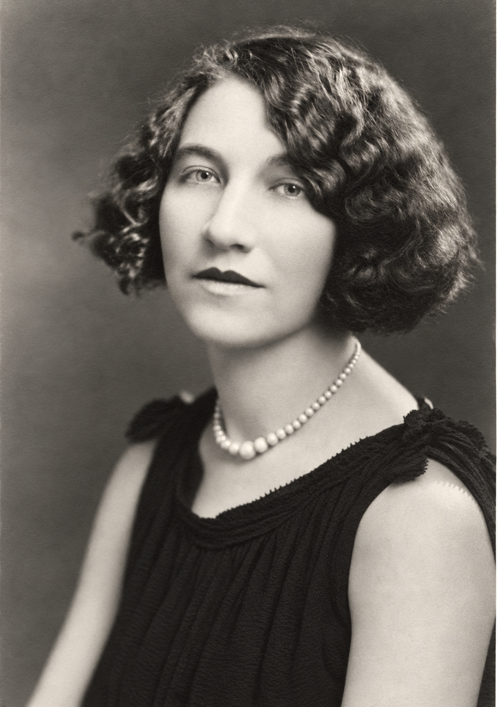

Susie Catherine "Sue" Webster
1902–1993

Life Events
Born: October 22, 1902
Died: January 1, 1993
Family
Father: William Gabriel Snead Webster
Mother: Addie Leola Daniel
Siblings
- Maynard Snead Webster
- Florence Melson Webster
- Charles Daniel Webster
- James Wilson Webster Sr.
- Eugene Lee Webster
- Mary Catherine Webster
Spouse:
Children
Military Service
No military service information has been added.
Biography
Susie Catherine Webster, affectionately known as Sue, was born on October 22, 1902, on Deal Island in Somerset County, Maryland. She was the daughter of William Gabriel Snead Webster and Addie Leola Daniel. According to family oral history, Sue was born with a twin sister, reportedly named Mary Catherine, who did not survive. The twin's identity and dates have not yet been independently verified.
The Webster family lived across the street from St. John's Methodist Episcopal Church at what is now 9883 Deal Island Road. The church dates to 1850 and was an important landmark in the community. The family's former house was reportedly demolished sometime in the late 1990s or early 2000s.
The Webster family moved from Deal Island to Baltimore around 1914, according to family history. The family lived at 2602 East Fayette Street. As a young woman, Sue worked as a telephone operator, reportedly beginning around 1918. Her employer and workplace location have not yet been independently verified.
Sue married Adam Johannes Krämer, whose surname was generally written Kramer in American records, on July 27, 1929, in Ellicott City, Howard County, Maryland. Their marriage was performed by H. D. Stewart of Emory Methodist Episcopal Church. According to family history, Sue and Adam were introduced by Lottie Smearman, identified as the daughter of Adam's aunt Loise Kramer. Sue and Adam had two children, Robert Adam Kramer and Bette Ann Kramer.
In 1938, Sue and Adam purchased a home in Dundalk, Baltimore County, Maryland. The family lived at 6902 Brentwood Avenue, a residence remembered by later generations of the family and documented in a family photograph. The 1940 and 1950 United States Federal Censuses record the Kramer household in the Baltimore area.
Sue devoted much of the period from 1936 through 1946 to raising her children at home. Around 1946, she began working in the cafeteria at Baltimore Pure Rye, where she served food until approximately 1957. She subsequently worked in the linen department at Hochschild Kohn's Eastpoint location from about 1957 until 1970 or 1971. These details of her employment are preserved in family history.
Sue spent her later years in Fairfax, Virginia. She died on January 1, 1993, at Fairfax Hospital in Falls Church, Virginia, at the age of 90. Her Virginia death certificate identifies a ruptured abdominal aortic aneurysm as the immediate cause of death. She was buried at Woodlawn Cemetery in Baltimore, Maryland, where her husband Adam was also buried.
Photos
No additional photographs have been added.
Sources
-
1910 United States Federal Census – William S. Webster Family
Type: censusThe 1910 United States Federal Census records the household of William S. Webster (age 38) and his wife Addie (age 28), along with their children Maynard S. (age 9), Susie C. (age 8), Florence N. (age 6), and Charles D. (age 9 months). William S. Webster was also known as William Snead Webster and later as Gabriel Snead Webster. The household was enumerated in Deal Island District 14, Somerset County, Maryland, Enumeration District 89, Sheet 3A.
Location: Deal Island District 14, Somerset County, Maryland, United States
Supports: Susie Catherine Webster was living with her parents and siblings in Somerset County, Maryland, in 1910., Susie C. Webster was recorded as eight years old in the 1910 census., William S. Webster and Addie Webster were recorded as the parents in Susie's household., The household included Maynard S., Susie C., Florence N., and Charles D. Webster.
-
1920 United States Federal Census – Gabriel S. Webster Family
Type: censusThe 1920 United States Federal Census enumerates the household of Gabriel S. Webster (age 48) and his wife Addie (age 38), along with their children Maynard (age 19), Susie (age 17), Florence (age 16), Charles (age 10), Catherine (age 3 years and 11 months), and James W. (age 6 months). The family was living in Ward 6 of Baltimore City, Maryland, Enumeration District 69, Sheet 7B. Gabriel S. Webster was also known as William Gabriel Snead Webster and had previously been recorded as William S. Webster in the 1910 census.
Location: Ward 6, Baltimore City, Maryland, United States
Supports: Gabriel S. Webster and Addie Webster were living in Baltimore City, Maryland, in January 1920., The Webster household included Maynard, Susie, Florence, Charles, Catherine, and James W. Webster., The family had relocated from Somerset County, Maryland, to Baltimore City between the 1910 and 1920 censuses., William Gabriel Snead Webster was recorded under the name Gabriel S. Webster in the 1920 census., Mary Catherine Webster, recorded as Catherine, was approximately three years and eleven months old., James Wilson Webster was approximately six months old.
-
1929 Marriage Certificate – Adam Kramer and Sue C. Webster
Type: marriage_certificateMarriage certificate documenting the marriage of Adam Kramer and Sue C. Webster on July 27, 1929, at Ellicott City, Maryland. The certificate states that the marriage was performed under a license issued by the Clerk of the Circuit Court for Howard County, Maryland. The officiant was H. D. Stewart of Emory M.E. Church.
Location: Ellicott City, Howard County, Maryland, United States
Supports: Adam Kramer and Sue C. Webster were married on July 27, 1929., The marriage ceremony took place in Ellicott City, Maryland., The marriage license was issued in Howard County, Maryland.
-
1929 Commemorative Marriage Certificate – Adam Kramer and Sue C. Webster
Type: marriage_certificateDecorative marriage certificate commemorating the marriage of Adam Kramer of Baltimore, Maryland, and Sue C. Webster of Baltimore, Maryland, on July 27, 1929. The certificate states that they were united in marriage according to the laws of Maryland. H. D. Stewart is identified as the officiant, and Mrs. H. D. Stewart is listed as a witness. The original document features floral illustrations and shows significant creasing, tears, and age-related deterioration. This certificate corroborates the marriage date and officiant recorded on the separate official marriage certificate.
Location: Maryland, United States
Supports: Adam Kramer and Sue C. Webster were married on July 27, 1929., H. D. Stewart officiated at their marriage., Mrs. H. D. Stewart was recorded as a witness., Both individuals were identified as being from Baltimore, Maryland.
-
1930 United States Federal Census – Adam Kramer and Snead Webster Families
Type: censusThe 1930 United States Federal Census records Adam Kramer (age 26) and his wife Sue Kramer (age 26) on lines 18–19. The following household, on lines 20–22, includes Snead Webster (age 58), Charles Webster (age 21), and Wilson Webster (age 10). Snead Webster was William Gabriel Snead Webster, father of Sue, Charles, and Wilson. The households were enumerated in Ward 4 of Baltimore City, Maryland, Enumeration District 4-232, Sheet 6A. The census records Sue as age 26, although her reported birth date of October 22, 1902, would make her 27 at the time of enumeration.
Location: Ward 4, Baltimore City, Maryland, United States
Supports: Adam Kramer and Sue Kramer were recorded together in Baltimore City in 1930., Snead Webster was recorded with Charles and Wilson Webster in a separate household immediately following Adam and Sue Kramer., William Gabriel Snead Webster was recorded under the name Snead Webster in 1930., Charles Webster was recorded as 21 years old in 1930., Wilson Webster was recorded as 10 years old in 1930., The Kramer and Webster households were enumerated consecutively in Baltimore City.
-
1940 United States Federal Census – Adam Kramer Family
Type: censusThe 1940 United States Federal Census records the household of Adam Kramer (age 36), his wife Sue C. Kramer (age 36), and their children Robert A. Kramer and Betty A. Kramer. The family was enumerated on April 10, 1940, in Enumeration District 3-79, Sheet 7A, lines 34–37. Brentwood Avenue is handwritten vertically in column 1 of the census, spanning approximately lines 20–31. The Kramer family residence has also been identified as being on Brentwood Avenue in Dundalk, Baltimore County, Maryland, through firsthand family recollection. Betty A. Kramer is identified in family records as Bette Ann Kramer.
Location: Brentwood Avenue, Dundalk, Baltimore County, Maryland, United States
Supports: Adam Kramer and Sue C. Kramer were recorded as husband and wife in Baltimore City in 1940., Robert A. Kramer and Betty A. Kramer were recorded as children in the household., The Kramer family was residing in Baltimore City, Maryland, in April 1940.
-
1950 United States Federal Census – Adam Kramer Family
Type: censusThe 1950 United States Federal Census records the household of Adam Kramer (age 46), his wife Sue Kramer (age 46), and their children Betty A. Kramer and Robert A. Kramer. The family was enumerated on April 25, 1950, in Enumeration District 3-173, Sheet 8, lines 9–12. Brentwood Avenue is identified in the handwritten street notation. The family's residence at 6902 Brentwood Avenue in Dundalk, Baltimore County, Maryland, is additionally supported by firsthand family recollection and a photograph showing the house number. Betty A. Kramer is identified in family records as Bette Ann Kramer.
Location: Brentwood Avenue, Dundalk, Baltimore County, Maryland, United States
Supports: Adam and Sue Kramer were recorded as husband and wife in 1950., Betty A. Kramer and Robert A. Kramer were recorded as their children., The Kramer family resided on Brentwood Avenue in the Baltimore area in 1950.
-
1993 Virginia Death Certificate – Sue C. Kramer
Type: death_certificateCommonwealth of Virginia Certificate of Death for Sue C. Kramer, who died on January 1, 1993, at Fairfax Hospital in Falls Church, Fairfax County, Virginia, at age 90. The certificate records her birth as October 22, 1902, in Maryland. Her father is identified as Gabriel Seneed and her mother as Addie Daniels, preserving the spellings recorded on the certificate. These names correspond to Gabriel Snead Webster and Addie Leola Daniel in the family archive. Her marital status is recorded as widowed, and Adam Kramer is named as her spouse. The certificate identifies Woodlawn Cemetery in Baltimore, Maryland, as her burial location. Bette Singletary is listed as the informant.
Location: Falls Church, Fairfax County, Virginia, United States
Supports: Sue C. Kramer died on January 1, 1993, in Falls Church, Virginia., Sue C. Kramer was born on October 22, 1902, in Maryland., The certificate identifies her parents as Gabriel Seneed and Addie Daniels., Adam Kramer is identified as her spouse., Woodlawn Cemetery in Baltimore, Maryland, is recorded as her burial location.